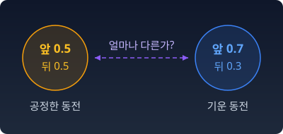

왜 정보기하학인가
이 책은 한 가지 질문에서 출발한다. 기계학습 모델이 무언가를 "배웠다"고 할 때, 그 모델은 어디에서 어디로 움직인 것일까?
손실이 줄었다, 정확도가 올랐다. 그런 숫자는 우리가 매일 본다. 하지만 그 숫자들 밑에서 실제로 움직이는 것이 무엇인지, 그것이 움직이는 "땅"이 어떻게 생겼는지는 잘 묻지 않는다.
이 장은 그 땅의 입구까지 걸어간다. 먼저 기계학습이 다루는 것이 결국 확률분포라는 것을 확인하고, 그다음 파라미터 공간에서 일어나는 이상한 일들을 구경하고, 마지막으로 그 일들을 읽을 언어가 어디서 왔는지 본다.
확률분포: 모델이 내놓는 것
모델이 어디에서 어디로 움직였는지 물으려면, 먼저 모델이 무엇을 내놓는지부터 알아야 한다. 입력을 넣으면 모델은 답을 하나 돌려준다. 정말 그럴까?
함수라는 상식
입력이 변하면 출력이 변한다. 온도 조절기에 25도를 넣으면 난방이 꺼지고, 18도를 넣으면 켜진다. 우리는 이것을 함수라고 부른다.
오랫동안 프로그램이란 사람이 이 함수를 직접 쓰는 일이었다. “온도가 20도보다 낮으면 켠다.” 규칙을 아는 사람이 규칙을 코드로 옮긴다.
기계학습의 핵심 전환
그런데 규칙을 모르는 경우가 있다. 고양이 사진을 보고 "고양이"라고 말하는 규칙을 if 문으로 쓸 수 있는 사람은 없다.
기계학습은 여기서 방향을 바꾼다. 사람은 함수의 틀만 짠다. 틀 안에는 빈칸이 수백만, 수십억 개 남아 있다. 그 빈칸을 채우는 숫자를 파라미터라고 부른다. 빈칸은 기계가 데이터를 보고 채운다.
틀에 무언가를 넣으려면, 먼저 세상을 숫자로 바꿔야 한다. 이미지는 픽셀 밝기의 나열이 된다. 문장은 토큰 번호의 나열이 되고, 다시 벡터가 된다. 소리는 1초에 수만 번 잰 공기 압력의 나열이 된다.
출력도 숫자여야 한다. 여기서 조금 이상한 일이 일어난다.
출력은 하나의 값이 아니다
“오늘 저녁은” 다음에 올 단어를 맞히는 언어 모델을 생각하자. “치킨”, “라면”, “굶는다”. 어느 것도 틀렸다고 할 수 없다. 같은 입력 뒤에 올 수 있는 답이 여럿이다.
그래서 언어 모델은 단어 하나를 내놓지 않는다. 어휘 전체에 대한 확률표를 내놓는다. “치킨” 0.4, “라면” 0.3, “굶는다” 0.01, …. 출력이 값 하나가 아니라 가능성의 분포가 된다.
이 사정을 거꾸로 보면 모델이 배우는 데이터도 같은 모양이다. 누군가는 “오늘 저녁은” 뒤에 "치킨"을, 누군가는 "라면"을 이어 쓴 글이 모여 학습 데이터가 된다. 그러니 우리 손에 있는 문장 하나하나는, 사람들이 말을 잇는 어떤 확률표에서 한 번씩 뽑혀 나온 것으로 볼 수 있다. 분포에서 이렇게 뽑혀 나온 하나하나를 표본이라 부른다.
이것은 우연한 설계가 아니다. 세상에는 같은 입력에 여러 답이 있는 일이 흔하고, 모델은 자기가 얼마나 모르는지도 말할 수 있어야 하고, 학습을 하려면 “조금 더 맞게” 고칠 수 있는 매끄러운 출력이 필요하다. 확률표는 세 가지를 한꺼번에 해결한다.
신경망의 마지막 층은 보통 후보마다 아무 실수나 하나씩 내놓는다. 이것을 로짓이라 부른다. 로짓을 확률표로 바꾸는 장치가 소프트맥스다.
지수를 씌우면 모든 값이 양수가 되고, 전체 합으로 나누면 합이 1이 된다. 어떤 로짓을 넣어도 나오는 것은 늘 분포다.
불러오는 중…
파이썬
import numpy as np
def softmax(z):
e = np.exp(z - z.max()) # 가장 큰 값을 빼도 결과는 같다 (넘침 방지)
return e / e.sum()
z = np.array([2.0, 1.0, -1.0]) # 세 후보 토큰의 로짓
q = softmax(z)
print("확률표 ", q.round(3), " 합", q.sum())
print("로짓+100 ", softmax(z + 100).round(3))
print("로짓×3 ", softmax(3 * z).round(3))
print("로짓÷3 ", softmax(z / 3).round(3))
# 확률표 [0.705 0.259 0.035] 합 1.0
# 로짓+100 [0.705 0.259 0.035]
# 로짓×3 [0.952 0.047 0. ]
# 로짓÷3 [0.48 0.344 0.176]
모든 로짓에 100을 더해도 확률표는 그대로다. 로짓의 차이만 의미가 있다. 로짓을 키우면 한 후보에 확률이 몰리고, 줄이면 고르게 퍼진다.
한 걸음 더 — 파라미터에 대한 믿음
보통의 학습은 파라미터의 값 하나를 찾는다. 가중치 w = 0.73. 점 하나다.
그런데 다른 관점도 있다. 데이터가 유한하니, 우리는 파라미터의 참값을 정확히 알 수 없다. 그렇다면 “w는 0.73이다” 대신 "w는 0.7 근처일 가능성이 높고, 0.5일 가능성도 조금 있다"라고 말하는 편이 정직하다. 파라미터에 대한 우리의 믿음을 분포로 쓰는 것이다.
이것이 베이즈 통계의 관점이다. 모든 통계학자가 이 관점을 따르지는 않는다. 파라미터는 고정된 값이고 흔들리는 것은 데이터뿐이라고 보는 쪽도 있다. 이 책은 두 관점을 모두 쓴다.
수확
데이터는 어떤 분포에서 뽑힌 표본이다. 모델의 출력은 분포다. 베이즈 관점에서는 파라미터에 대한 믿음도 분포다.
어디를 보아도 확률분포가 있다. 확률분포가 주인공이 될 수밖에 없다.
확률분포가 주인공이라면, 다음 질문이 따라온다. 분포와 분포 사이는 “얼마나” 먼가? 공정한 동전과 앞면이 0.7의 확률로 나오는 기운 동전은 “얼마나” 다른가?

그 "얼마나"를 숫자로 쓰려면, 분포가 사는 공간의 지도가 필요하다.
문제 1. 체스 레이팅과 승률
체스와 여러 온라인 게임은 선수마다 레이팅이라는 점수를 매긴다. 흔히 쓰는 엘로(Elo) 방식에서는 레이팅이 RA인 선수가 RB인 선수를 상대로 얻으리라 기대하는 점수(이기면 1, 비기면 ½, 지면 0)를 1 / (1 + 10(RB − RA)/400)로 계산한다. 여기서는 비기는 판이 없다고 보고 이 값을 이길 확률로 읽자. (가) 레이팅 1600인 선수가 1400인 선수를 이길 확률을 구하라. (나) 한 시즌이 지나 리그의 모든 선수 레이팅이 한꺼번에 100점씩 올랐다. 두 선수가 다시 만나면 이길 확률은 어떻게 되는가? (다) 이 식은 후보가 둘인 소프트맥스와 같은 꼴이다. 레이팅에 어떤 수를 곱하면 로짓이 되는가?
함께 풀기

1600이 1400보다 조금 높으니까 1600 / (1600 + 1400)… 53% 정도요?

문제의 식에는 두 레이팅이 어떤 모양으로 들어가 있어요?

RB − RA… 나눗셈이 아니라 빼기네요. 10−200/400 = 10−0.5 ≈ 0.316이니까 1 / 1.316 ≈ 0.760. 76%요. 53%랑 한참 다르네요.

(나)는 식에 차이만 들어가니까, 둘 다 100점씩 올라도 차이는 200 그대로야. 이길 확률도 76% 그대로.
민준 학생이 처음 한 방식으로는요?
1700 / 3200 = 53.1%요. 실력 차이는 그대로인데 확률이 바뀌네요.
보통 선수가 1500점 안팎이 되게 정한 건 누구일까요?
레이팅을 처음 매긴 쪽이 정한 기준이죠. 기준점은 아무 데나 옮겨도 되는 숫자라서, 레이팅끼리의 비율은 뜻이 없고 차이만 뜻이 있어요.

그럼 (다)는 10x/400 = ex·ln 10/400이니까, 레이팅에 ln 10 / 400을 곱하면, 곧 173.7로 나누면 로짓이에요. 분자 분모에 첫 선수의 로짓으로 만든 e의 거듭제곱을 곱해 보면, 두 선수의 로짓을 넣은 소프트맥스와 똑같은 식이 돼요. 200점 차이는 로짓 차이 1.15예요.
레이팅이 로짓이었네요. 과제 점수에 모두 10점씩 얹어 줘도 누가 누구보다 몇 점 잘했는지는 그대로인 것처럼, 레이팅도 다 같이 올려도 승부 예측은 그대로고요.
문제 2. 확률표에서 로짓으로
어떤 언어 모델이 세 후보 토큰에 확률표 (0.5, 0.3, 0.2)를 내놓았다. (가) 이 확률표를 내놓는 로짓을 한 벌 구하라. (나) 그런 로짓은 몇 벌이나 있는가? 세 번째 후보의 로짓을 0으로 정하면 어떻게 되는가? (다) 거꾸로, 로짓 (2, 1, −1)을 소프트맥스 없이 그대로 합으로 나눠 확률표를 만들면 안 되는 이유는 무엇인가? (위 위젯의 막대를 끌어 구한 로짓을 넣으면 오른쪽 확률표로 답을 확인할 수 있다. 막대는 0.1 단위로 움직인다.)
함께 풀기
(다)부터 할게요. 합으로 나누면 되잖아요? 2 + 1 − 1 = 2니까 (1, 0.5, −0.5)요.
세 번째 칸 확률이 얼마예요?
−0.5… 음수 확률이네요. 첫 칸은 1이라서 나머지 둘이 들어갈 자리도 없고요.
그래서 지수를 먼저 씌우는 거예요. e의 거듭제곱은 늘 양수니까.
그럼 (가)는 거꾸로 가면 되겠네요. 확률에 비례하게 로짓을 (2.5, 1.5, 1)로 잡으면 비율이 5 : 3 : 2로 같으니까 (0.5, 0.3, 0.2)가 나오겠죠.
위젯에 그대로 넣어 볼까요?

(0.629, 0.231, 0.140)… 첫 후보가 확 커졌어요. 비율을 맞춰도 안 되네요.

지수를 씌우니까 로짓의 차이 1이 확률의 비 e배가 돼. 비를 되돌리려면 로그를 씌워야 해. (ln 0.5, ln 0.3, ln 0.2) = (−0.693, −1.204, −1.609)를 넣으면 e를 씌운 값이 0.5, 0.3, 0.2 그대로이고, 합이 이미 1이니까 나눌 것도 없어.
(나)는요?
세 로짓에 같은 수를 더하면 분자 분모에 같은 e의 거듭제곱이 붙어서 약분되니까, 한 벌에서 무수히 많은 벌이 나와요. 세 번째를 0으로 정하려면 셋 모두에서 ln 0.2를 빼면 되고, 그러면 (ln 2.5, ln 1.5, 0) ≈ (0.916, 0.405, 0) 한 벌로 정해져요.
위젯에 (0.9, 0.4, 0)을 넣으니 (0.497, 0.301, 0.202)예요. 0.1 단위라 딱 맞지는 않아도 거의 맞아요. 그래서 numpy 구현에서 최댓값을 빼고 계산하는구나. 한 후보를 기준으로 빼도 답이 안 바뀌니까.
부정적분에서 적분상수를 아무렇게나 잡아도 미분하면 같은 함수가 나오잖아요. 로짓도 그런 거네요. 기준점은 아무 데나 잡아도 되고 차이만 의미가 있어요.
그래서 로짓 자체는 분포가 아니에요. 분포의 "이름표"일 뿐이고, 같은 분포에 이름표가 무수히 많아요. 이 사실은 뒤에서 여러 번 다시 중요해져요.
문제 3. 한 토큰만 밀어주기
글을 만들어 내는 서비스는 어떤 토큰을 더 자주 나오게 하거나 아예 나오지 않게 하려고, 모델이 내놓은 로짓 가운데 그 토큰의 로짓에만 값을 더하거나 빼곤 한다(허깅페이스 transformers 라이브러리의 생성 설정에도 토큰에 더할 값과 막을 토큰 목록을 적는 자리가 있다). 모델이 “오늘 저녁은” 다음의 세 후보 「치킨」「라면」「굶는다」에 로짓 (2, 1, −1)을 내놓았다. 확률표로는 (0.705, 0.259, 0.035)다. (가) 「라면」의 로짓에만 2를 더하면 확률표는 어떻게 되는가? (나) 이때 「치킨」과 「굶는다」의 확률은 각각 얼마나 줄었는가? 두 후보의 확률 비는 바뀌었는가? (다) 「굶는다」의 확률을 0.001 아래로 낮추려면 그 로짓에서 얼마보다 많이 빼야 하는가? 확률을 정확히 0으로 만들려면? (위 위젯의 「라면」 막대를 3으로 끌어 (가)를 확인할 수 있다.)
함께 풀기
로짓에 2를 더하면 확률에 e² ≈ 7.39가 곱해지니까, 라면은 0.259 × 7.39 ≈ 1.91… 1이 넘어요?
곱하고 나서 할 일이 하나 남지 않았어요?
아, 합이 1이 되게 다시 나눠야죠. 로짓 (2, 3, −1)을 소프트맥스에 넣으면 (0.265, 0.721, 0.013)요. 라면이 0.26에서 0.72로 올랐어요.
(나)는 치킨이 0.705에서 0.265로 0.44나 줄었고, 굶는다는 0.035에서 0.013으로 0.022 줄었어. 치킨이 라면한테 제일 많이 뺏겼네.
몇 배로 줄었는지로 보면요?

치킨은 0.265 / 0.705 ≈ 0.376배, 굶는다도 0.013 / 0.035 ≈ 0.376배예요. 똑같아요. 치킨 대 굶는다의 비는 e³ ≈ 20.1 그대로고요. 라면 로짓만 건드렸으니 나머지 둘의 로짓 차이는 안 바뀌었어요. 치킨이 많이 뺏긴 것처럼 보인 건 원래 많이 갖고 있어서였어요.
(다)는 코드로 빼는 값을 늘려 보니까 3을 빼면 0.0018, 4를 빼면 0.0007이에요. 딱 맞추면 굶는다의 새 로짓이 −4.59쯤이어야 확률이 0.001이 되니까, 원래 −1에서 3.59보다 많이 빼면 돼요.

0으로 만들려면… 로짓을 얼마나 낮춰도 e의 거듭제곱은 0이 안 되네요. 끝없이 빼야 해요.
그래서 토큰을 아예 막을 때는 그 로짓을 −∞로 둬요. 소프트맥스는 유한한 로짓으로는 어떤 후보에도 정확히 0을 주지 않아요.
확률론 시간에 배운 조건부 확률로 보면 더 깔끔해요. 라면이 아니라는 조건 아래에서 치킨과 굶는다의 확률은 전에도 뒤에도 (0.953, 0.047)이에요. 한 후보의 로짓을 건드리는 건 그 후보의 몫만 바꾸고, 나머지끼리의 사이는 그대로 두는 일이에요.